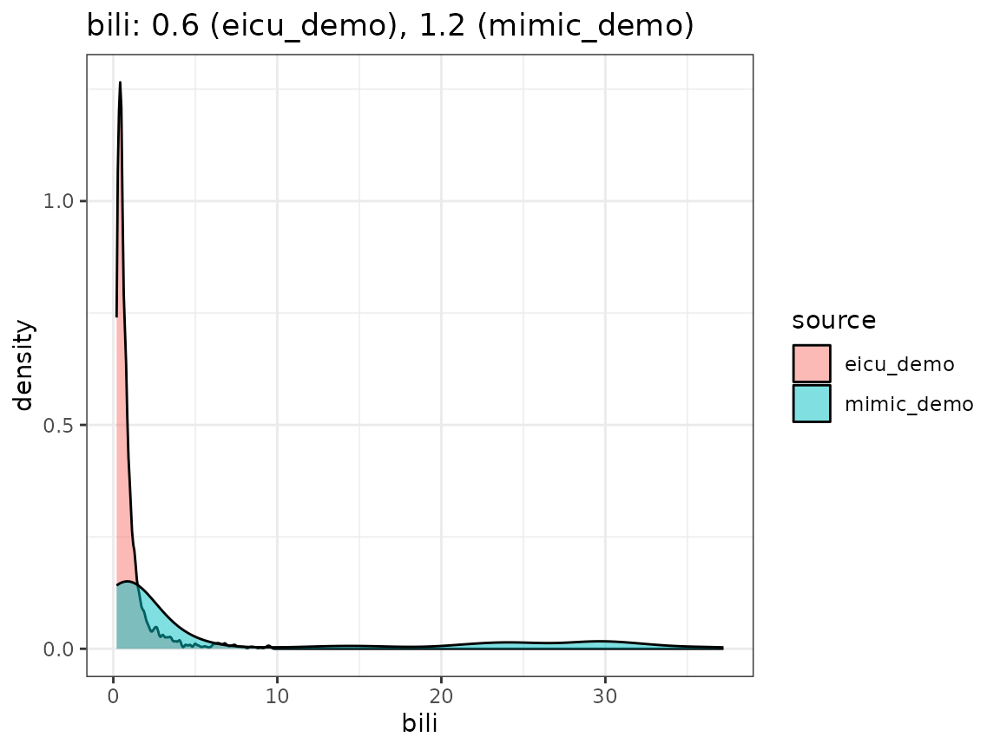
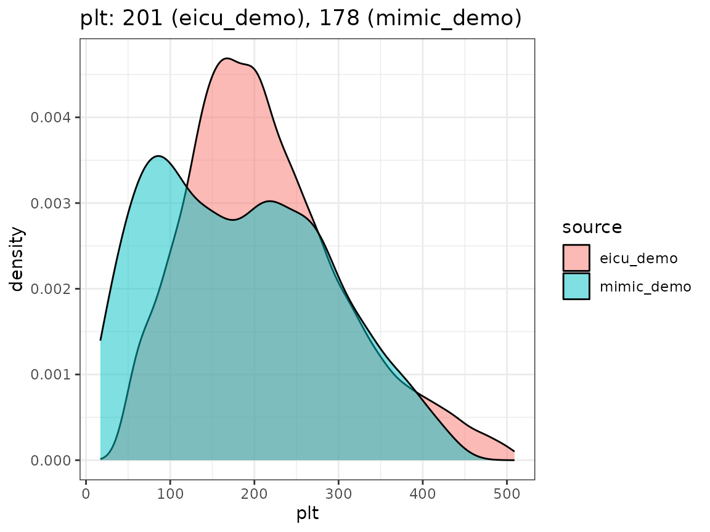
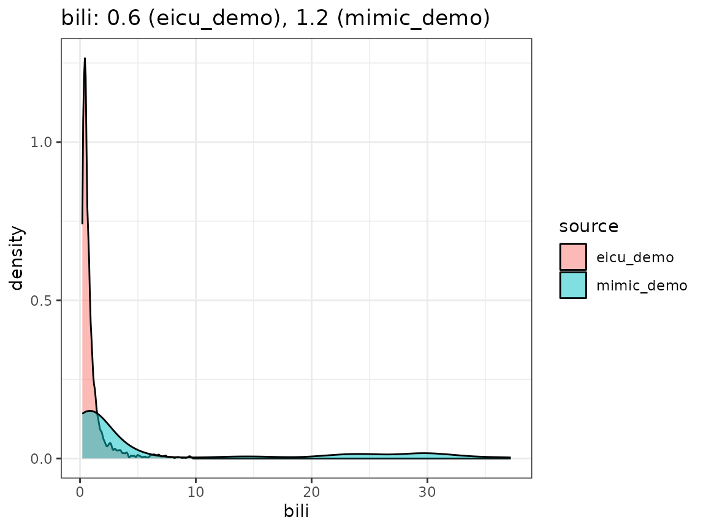
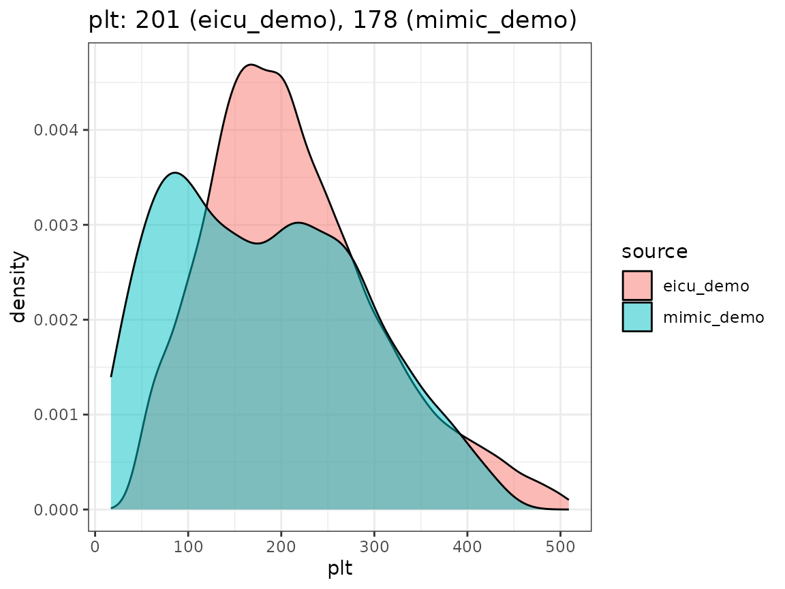

Units of measurement
uom.RmdOne challenge when working with electronic healthcare (EHR) data from different hospitals, which is accentuated if the intensive care units (ICUs) collecting the data are located in different geographic regions, is the use of different measurement unit systems. In part, this can be attributed to the use of imperial units in English speaking countries (e.g. patient weight being reported in lbs instead of kg), but more subtle differences in practice are involved as well, such as reporting lab test results in mg/dL instead of the SI unit mmol/L. While discrepancies of the former type are easy to resolve, harmonization of different notions of concentration is slightly more involved due to the conversion factor being substance-specific.
ricu data concepts
Data concepts of type num_cncpt can specify an expected units as character vector (where the string in position 1 is added as per-column attribute units). When using concepts of this type, unit conversion to the specified target unit is not handled automatically but is up to the user via a callback function. Unit mismatches are reported as messages during concept loading1.
assign_dataset_names(demo)[1] “{r, assign-demo, eval = FALSE}\ndemo <- c(\"mimic_demo\", \"eicu_demo\")\n”
(dat <- load_concepts(c("lact", "map"), demo))
#> ── Loading 2 concepts ──────────────────────────────────────────────────────────
#> • lact
#> ◯ removed 19 (0.74%) of rows due to out of range (or `NA`) entries
#> ◯ not all units are in [mmol/L]: mEq/L, mmole/L, MMOLL (0.62%, 0.08%,
#> and 0.51%)
#> • map
#> ◯ removed 1438014 (74.7%) of rows due to out of range (or `NA`)
#> entries
#> ◯ not all units are in [mmHg], [mm Hg]: NA (96.74%)
#> ────────────────────────────────────────────────────────────────────────────────
#> # A `ts_tbl`: 139,144 ✖ 5
#> # Id vars: `source`, `icustay_id`
#> # Units: `lact` [mmol/L], `map` [mmHg]
#> # Index var: `charttime` (1 hours)
#> source icustay_id charttime lact map
#> <chr> <int> <drtn> <dbl> <dbl>
#> 1 eicu_demo 141764 1 hours NA 112.
#> 2 eicu_demo 141764 2 hours NA 128
#> 3 eicu_demo 141764 3 hours NA 143
#> 4 eicu_demo 141764 4 hours NA 133
#> 5 eicu_demo 141764 5 hours NA 103
#> …
#> 139,140 mimic_demo 298685 314 hours NA 76
#> 139,141 mimic_demo 298685 315 hours NA 58
#> 139,142 mimic_demo 298685 316 hours NA 47
#> 139,143 mimic_demo 298685 317 hours NA 35
#> 139,144 mimic_demo 298685 318 hours NA 12
#> # … with 139,134 more rowsMessages raised during loading of lactate values, for example, indicate that 0.62% of retrieved values are specified in mEq/L instead of mmol/L (which requires an identity transformation for unit conversion), while the remaining discrepancies are false positives (both mmole/L and MMOLL can be assumed to mean mmol/L). For mean arterial bloop pressure values, the target unit is specified as mmHg (with the alternative spelling mm Hg being accepted as well), however, due to the data organization in eICU2, no explicit measurement units are specified for this variable, in turn causing the large percentage of missing unit values reported.
Several utility functions are exported from ricu for helping with creating callback functions that handle unit conversion. Data items corresponding to the bilirubin concept for the European datasets HiRID and AUMCdb, for example, have a callback entry specified as convert_unit(binary_op(`*`, 0.058467), "mg/dL"). This creates a callback functions which applies binary_op(`*`, 0.058467) to the column specified as val_var and replaces existing values in the column identified by unit_var with the value "mg/dl". In case the loaded data already is comprised of a mix of units, a regular expression passed as rgx can be specified, which will be used to identify the rows on which to operate. Finally, the function binary_op turns a binary function into an unary function by fixing the second operand.
As a first sanity check we will slightly modify data loading in order to be warned about item IDs that do not appear in the data. For this we chop up data items loaded from the dictionary such that items of type sel_itm which may contain several IDs, are split into separate items and regular expressions in rgx_itm items are taken apart such that aggregate expressions such as (foo|bar)baz are turned into foobaz and barbaz.
Next, for the actual data loading, report_empty() substitutes the internally called function do_itm_load() with a modified version that takes note of the offending IDs alongside concept, table and data source names whenever zero rows are returned for a given itm object.
concepts <- c("map", "lact", "bili", "gcs", "abx")
dict <- load_dictionary(demo, concepts)
empty_items <- report_empty(dict, merge = FALSE, verbose = FALSE)
#> Tracing function "do_itm_load" in package "ricu"
#> Untracing function "do_itm_load" in package "ricu"| name | id | source | table |
|---|---|---|---|
| map | 6072 | mimic_demo | chartevents |
| abx | aztreonam | mimic_demo | prescriptions |
| abx | 225838 | mimic_demo | inputevents_mv |
| abx | 225840 | mimic_demo | inputevents_mv |
| abx | 225844 | mimic_demo | inputevents_mv |
| abx | 225847 | mimic_demo | inputevents_mv |
| abx | 225848 | mimic_demo | inputevents_mv |
| abx | 225857 | mimic_demo | inputevents_mv |
| abx | 225862 | mimic_demo | inputevents_mv |
| abx | 225866 | mimic_demo | inputevents_mv |
| abx | 225868 | mimic_demo | inputevents_mv |
| abx | 225871 | mimic_demo | inputevents_mv |
| abx | 225873 | mimic_demo | inputevents_mv |
| abx | 225875 | mimic_demo | inputevents_mv |
| abx | 225876 | mimic_demo | inputevents_mv |
| abx | 225877 | mimic_demo | inputevents_mv |
| abx | 225882 | mimic_demo | inputevents_mv |
| abx | 225885 | mimic_demo | inputevents_mv |
| abx | 225886 | mimic_demo | inputevents_mv |
| abx | 225889 | mimic_demo | inputevents_mv |
| abx | 225890 | mimic_demo | inputevents_mv |
| abx | 225895 | mimic_demo | inputevents_mv |
| abx | 225896 | mimic_demo | inputevents_mv |
| abx | 225897 | mimic_demo | inputevents_mv |
| abx | 225898 | mimic_demo | inputevents_mv |
| abx | 225900 | mimic_demo | inputevents_mv |
| abx | 225903 | mimic_demo | inputevents_mv |
| abx | 225905 | mimic_demo | inputevents_mv |
| abx | 228003 | mimic_demo | inputevents_mv |
| abx | bactrim | eicu_demo | infusiondrug |
If no table is printed given the modified data loading above, every single ID that is part of a sel_itm or an rgx_itm actually returns some data. For other types of data items this means that for every single item as a whole, some data was returned. There are limitations to this type of sanity check though: It might be the case that one of the supplied IDs associated with a num_cncpt concept returns data in an unexpected unit of measurement which may cause the range filter to remove all of that data again. In such a scenario though, this will be reported (if TRUE is passed as verbose argument to load_concept()). Paying attention to the output produced by load_concept() should help spot such issues, albeit no longer at item resolution but only at concept level.
Next, we will investigate the number of measurements available per concept and stay day. For each stay ID and concept we calculate the number of measurements and note the stay duration. From this we can visualize how the number of measurements per day is distributed over the datasets alongside the percentage of patients that have at least one measurement available.
[1] “> Note: The following code blocks are run using demo (mimic_demo and eicu_demo, ) instead of full datasets (mimic, eicu, aumc, hirid and miiv, ) and therefore might be less useful. For data set up, please consult the manual at ?attach_src. The full version of this vignette is available from CRAN.”
count_meas <- function(x) {
x[!is.na(get(data_var(x))), list(count = .N), by = c(id_vars(x))]
}
meas_day <- function(x, los) {
merge(x, los)[, count := count / los_icu]
}
quants <- function(x) {
setNames(
as.list(quantile(x, c(0.05, 0.25, 0.5, 0.75, 0.95))),
c("min", "lwr", "med", "upr", "max")
)
}
meas_stats <- function(x, concept) {
x[, c(list(concept = concept, n_pat = .N), quants(count / los_icu)),
by = "source"]
}
assign_dataset_names(srcs)[1] “{r, assign-srcs, eval = FALSE}\nsrcs <- c(\"mimic_demo\", \"eicu_demo\")\n”
count_meas <- function(x) {
x[!is.na(get(data_var(x))), list(count = .N), by = c(id_vars(x))]
}
meas_day <- function(x, los) {
merge(x, los)[, count := count / los_icu]
}
quants <- function(x) {
setNames(
as.list(quantile(x, c(0.05, 0.25, 0.5, 0.75, 0.95))),
c("min", "lwr", "med", "upr", "max")
)
}
meas_stats <- function(x, concept) {
x[, c(list(concept = concept, n_pat = .N), quants(count / los_icu)),
by = "source"]
}
los <- load_concepts("los_icu", srcs, verbose = FALSE)
los <- los[los_icu > 0, ]
concepts <- c("map", "lact", "crea", "bili", "plt")
dat <- load_concepts(concepts, srcs, merge = FALSE, verbose = FALSE)
counts <- lapply(dat, count_meas)
counts <- lapply(counts, merge, los)
counts <- Map(meas_stats, counts, names(counts))
counts <- do.call(rbind, counts)
counts <- merge(counts, los[, list(total_pat = .N), by = "source"],
by = "source")
head(counts)
#> source concept n_pat min lwr med upr
#> 1: eicu_demo map 2343 8.1547749 18.7905901 22.5195482 23.737428
#> 2: eicu_demo lact 838 0.1607749 0.4263825 0.9270397 1.868192
#> 3: eicu_demo crea 2368 0.8504940 1.4980497 2.5036223 4.643951
#> 4: eicu_demo bili 1823 0.2477931 0.6470456 1.2080537 2.244740
#> 5: eicu_demo plt 2306 0.7593835 1.3696041 2.2102853 4.093090
#> 6: mimic_demo map 132 14.8758279 19.7455626 21.5032468 22.526516
#> max total_pat
#> 1: 24.959050 2508
#> 2: 6.116601 2508
#> 3: 16.187792 2508
#> 4: 8.122924 2508
#> 5: 14.514992 2508
#> 6: 23.453204 136
Finally, we compare the densities we obtain by looking concept values per dataset, as visualized in the following plot.
 

When extending the ricu dictionary to both new data sources and new data concepts, it might be worthwhile to visually inspect the returned data in a fashion similar to the above in order to have a high-level confirmation that measurement units roughly agree.
Recently, experimental support for automatic unit conversion has been added via the
unt_cncptclass. Such a concept will attempt to convert data columns using the units package and therefore requires that both the source- and target-units are recognized and convertible (seeunits::ud_are_convertible()).↩︎Both the
vitalperiodicandvitalaperiodictables in eICU are layed out in wide format (whereas most other tables are in long format), and therefore no unit columns are available. This also explains the substantial degree of missingness (in terms of values) reported, as such a wide data organization scheme coupled with differing measurement intervals per variable will inevitably lead to some degree of sparsity.↩︎